Find a image (empty-room.jpg) from internet for warping
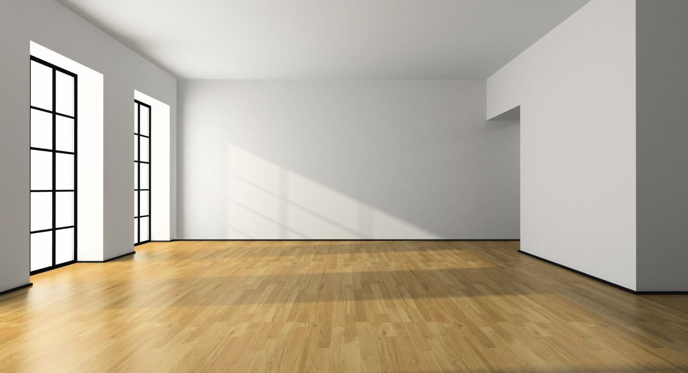
(source from https://www.google.com/search?q=room&espv=2&biw=1920&bih=974&site=webhp&source=lnms&tbm=isch&sa=X&ved=0ahUKEwi724Pfh5zQAhVlzIMKHfSLAM4Q_AUIBigB#imgrc=6-D3_xc93DLWEM%3A)
Step 2:
Compute vanishing points
Draw lines in x, y ,z direction respectively
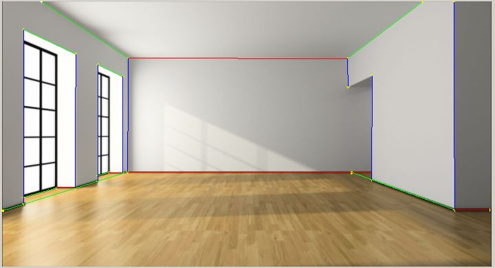
vanishing points:
(248396.104096,333.036100,1.000000,1000.000000,0.000000,0.000000,1.000000)
(800.080280,432.143487,1.000000,0.000000,1000.000000,0.000000,1.000000)
(812.659924,319018.620923,1.000000,0.000000,0.000000,1000.000000,1.000000)
Step 3:
Compute homography
Select 4 points on the floor (coordinates are set to (0,0,0),(0,1,0),(1,0,0),(1,1,0)) to compute homography
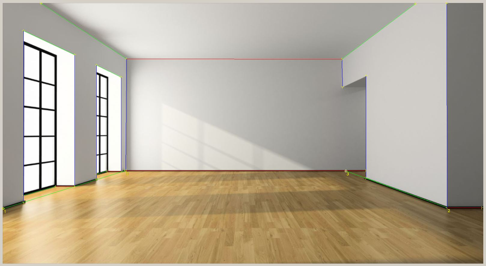
Reference plane homography:
0.738889,-0.397712,0.398668
0.005480,-0.214049,0.301800
0.000022,-0.000495,0.000974
Step 4:
Set a point for reference height (the bak left upper coner in my image,coordinate (0,0,1)) ,then using sameZ for points on the same height and sameXY for points directly above a reference point to calculate all polygon vertice coordinates.
For instance, sameXY generates point 1's coordinate
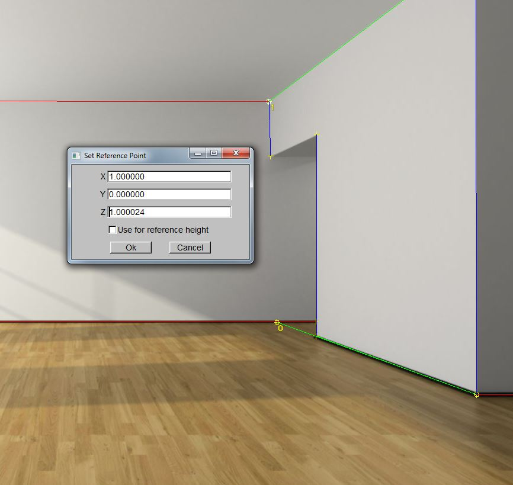
Next, select all polygens
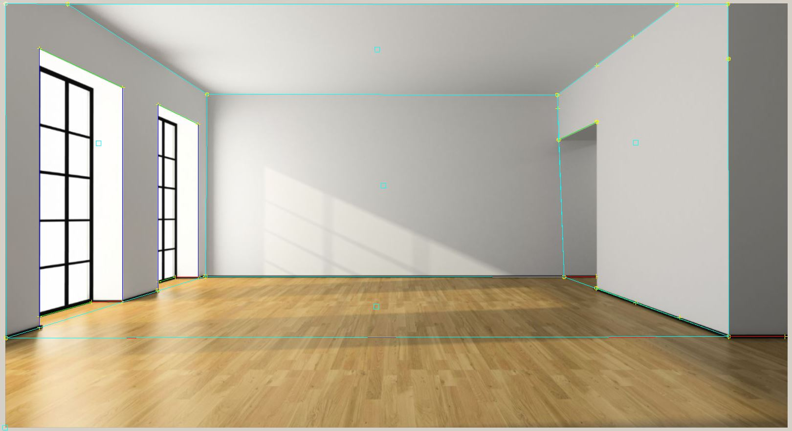
Step 5:
View model
view1:
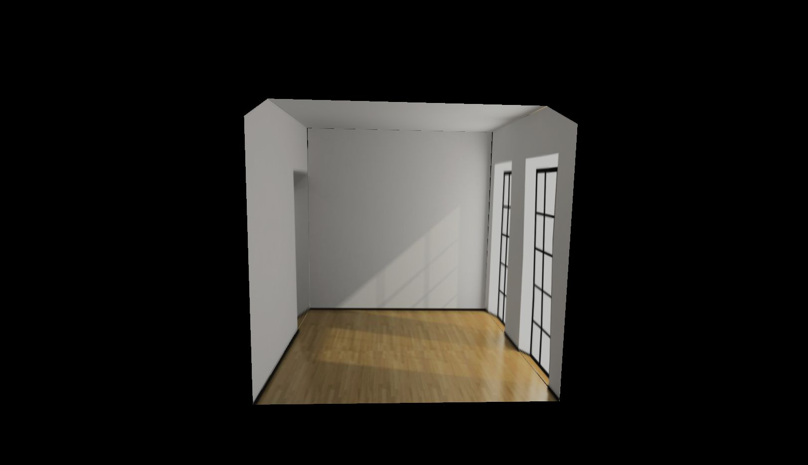
view2:
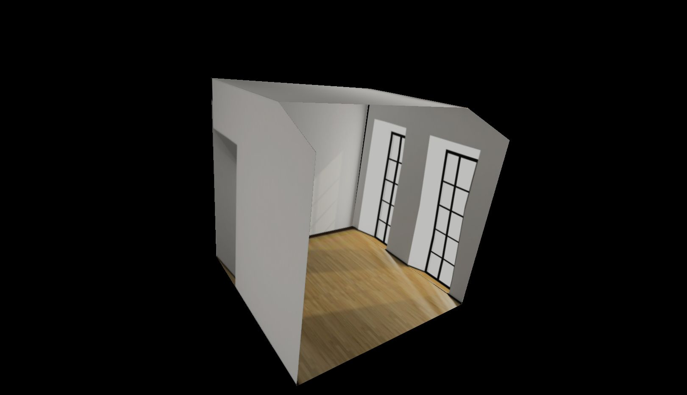
view3:
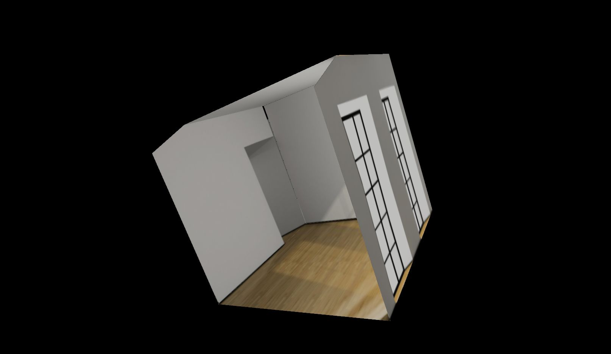
Step 6:
Unwarp image
an example of unwarp the box:
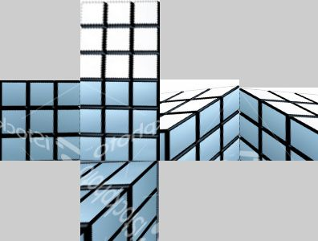
Choose view3 of myroom model, open in UI:
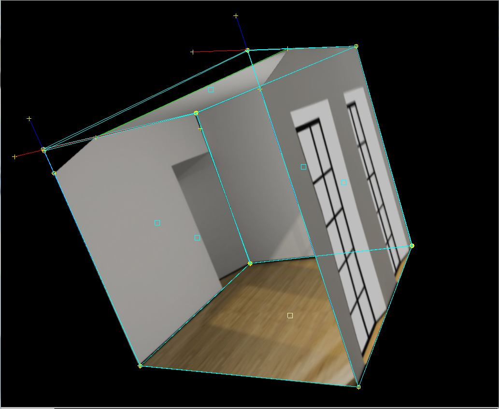
Unwarp it get:
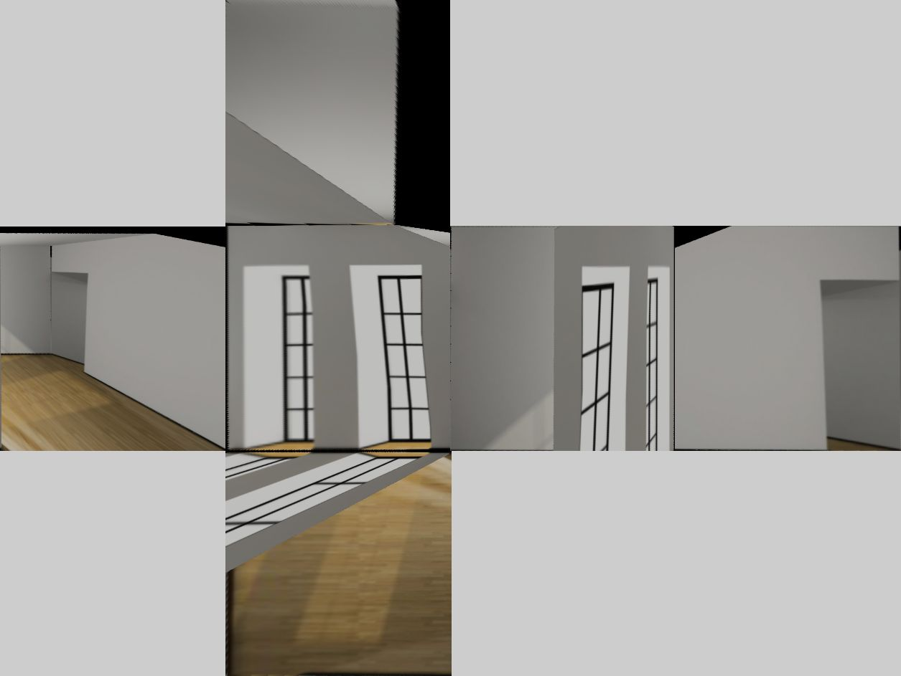
Because of occlusion and perspective, there are only two sides of my mode gets ideal unwarped correspodence ( the top and the left sides in my model correspond to the top and the right most boxes in my unwarped image). The floor in my model corresponds to the bottom box in image,and the ceiling to the top, the right side to the middle box, the back side to the right box next to the middle box. The door looks distorted after unwarping . It was a little unstraight in original model but probably because my H matrix give inconsistent transform to points iof the door.
I also tired to construct bigroom.jpg which is in oue package and the result is satisfiable:

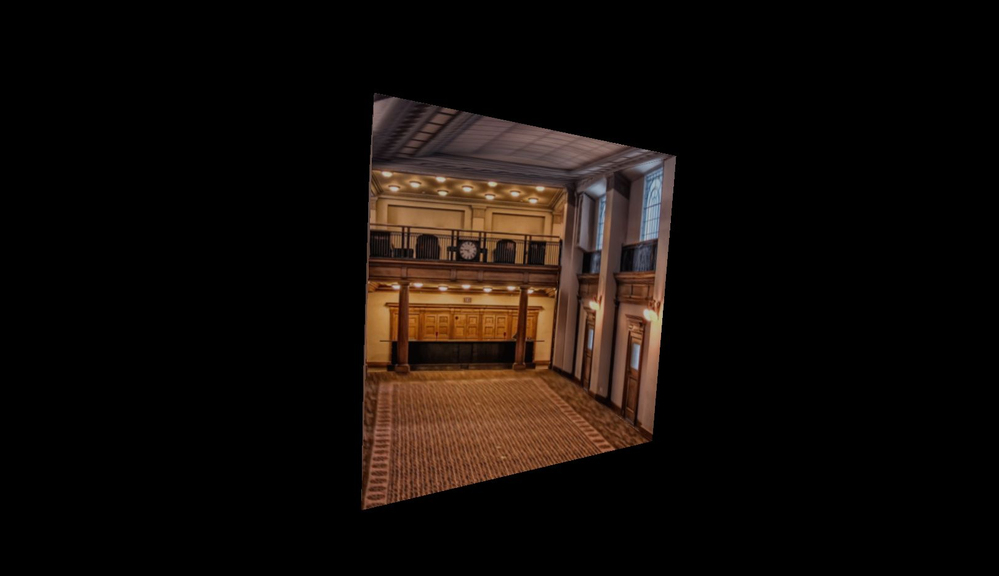
However, when I used another sketch image from internet to reconstruct view, the result is horrable
image from online is below:
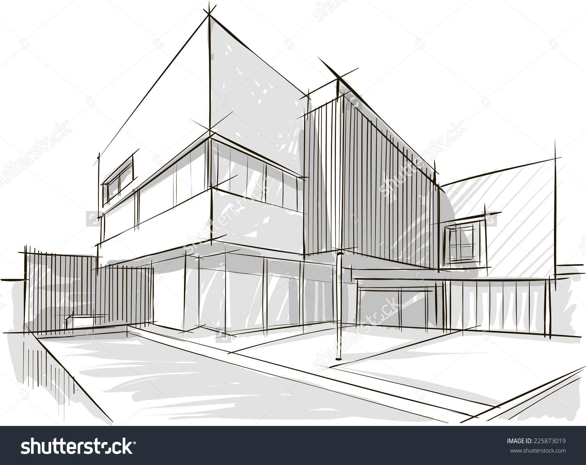
my model:
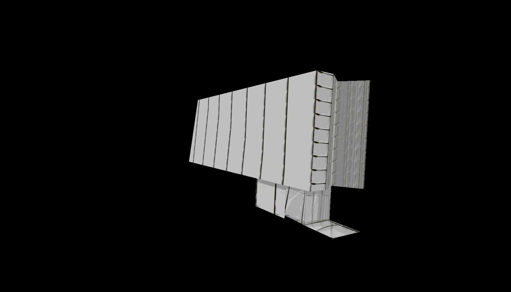
The reason might be that
(1) the more polygons we use, the harder it is to fit every polygon's 3D constraint which makes sameZ, sameXY give out bad estimation
(2) the sketch is not very precise that introduces potential error in model